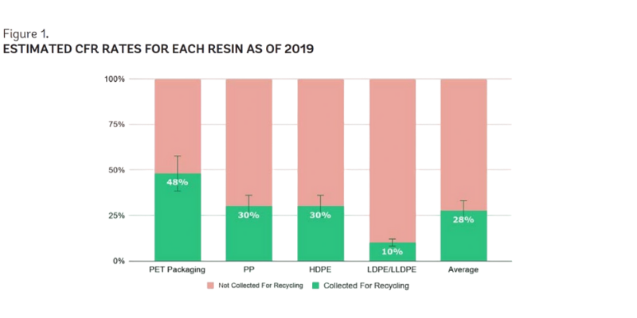

One man’s trash is another man’s tile.
Click each layer to learn more.
The abaca plant, also known as "Manila hemp" or Musa textilis, is native to the Philippines. The plant is cultivated mainly for its fibers, which are most often used in ropes, twines, and the like. This is due to its high mechanical strength and biodradability, making it widely used for applications requiring strength or durability.
Abaca fibers are extracted from the leaf sheaths of the plant through both manual and mechanical methods.
Alongside this, the Philippines produces abundant agricultural fiber waste, such as abaca, known for its tensile strength and biodegradability.
These manual methods are the most commonly used to extract abaca fibers, namely:
• Tuxying, a method of peeling off abaca leaf sheaths using a sharp knife
• Stripping, a way of extracting fibers with a stripping machine or hand blade
• Drying, done through either air or sun-drying fibers to reduce moisture content
Due to LDPE being hydrophobic (water resistant) and abaca fibers being hydrophilic (water absorbing), they may have poor adhesion with one another.
Surface treatments are used to improve the adhesion between these two materials.
Chemical treatments that are typically used are too harsh, expensive, and not environmentally friendly. Therefore, starch treatment offers a sustainable and biodegradable option to improve bonding between the materials.
Starch treatment promotes better bonding by:
• Providing a starch coating unto the abaca fibers
• Filling in the large gaps between the materials
• Contributing to enhanced strength due to less gaps
Plastic production has spiked during recent years, with most plastics comprised of single-use plastics such as plastic bags. While plastic waste has been increasing, only a small amount of these plastics are collected to be recycled.

Note. Reprinted from Market study for the Philippines: Plastics circularity opportunities and barriers, World Bank Group (2021).
Low-Density Polyethylene (LDPE) is a common thermoplastic used in consumer packaging, yet it is rarely recycled through traditional means due to its flexibility and contamination issues.
Alongside this, the Philippines produces abundant agricultural fiber waste, such as abaca. It is known for its strength and biodegradability.
This research explores combining LDPE with abaca fiber to create a composite material that can be molded into wall cladding tiles for indoor use.
This solution aims to address:
• Waste Reduction, by repurposing post-consumer plastic and agricultural by-products,
• Material Innovation, through composite technology that enhances the mechanical strength of recycled LDPE,
• Sustainability, by promoting upcycling practices in material science and construction design.
Plastics are categorized into multiple types, and are distinguishable through recycling labels.
Recycling labels have various numbers that indicate the plastic type, making recycling easier.
These labels categorize plastics into seven (7) groups, including:
The composite tile product is an indoor flooring material made by fusing post-consumed LDPE plastic with starch-treated abaca fiber.
The process involves melting LDPE, integrating abaca fibers for reinforcement, and compressing the mixture into molds to form durable, textured tiles.
This approach not only offers a method of repurposing hard-to-recycle plastic but also adds value to agricultural waste, promoting an eco-friendly alternative to traditional cladding tiles.
This study is grounded with the theory of fiber-reinforced composites. As described by Nijssen (2015), a composite is comprised of two macroidentifiable materials to strengthen overall mechanical performance.
LDPE acts as the polymer matrix, while abaca fiber serves as the reinforcement. This fiber-reinforced plastic gains improved tensile strength and rigidity while reducing brittleness.
The success of the tile depends on the bond between the polymer matrix and the reinforcement, which can be improved by chemical or surface treatment of the abaca fiber.
If you’d like to reach out, please fill out the form below: